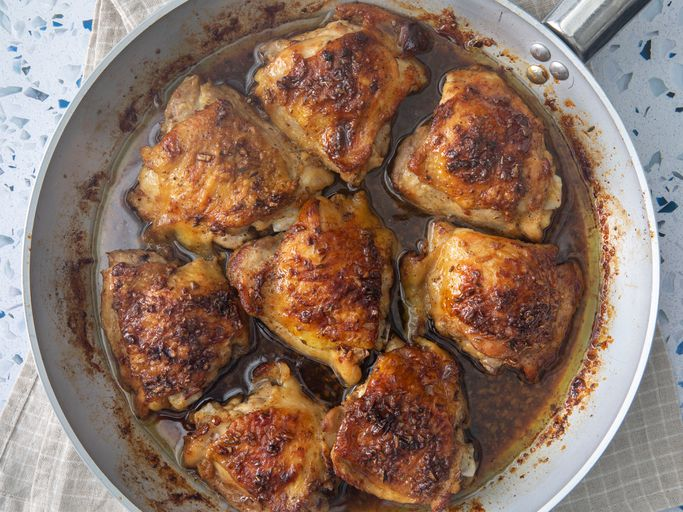

Garlic Brown Sugar Over Roasted Chicken Thighs

Description
Bone in chicken thighs are the easiest things to cook. Even if you leave them in too long and go over temperature, you will have to leave them
in the oven for a long time to make them dry out! The brown sugar adds a slight sweetness that really complements the chicken
Try these with Roasted Brussels Sprouts for a delicious meal!
Ingredients
- 8 bone-in, skin-on chicken thighs
- Salt & ground pepper
- 3 tbsp butter
- 4 cloves minced garlic
- 1/4 cup brown sugar
- 1 tbsp honey
- 1/2 tsp dried oregano
- 1/4 tsp dried thyme
- 1/4 tsp dried basil
Steps
- Preheat oven to 400 degrees
- Season chicken thighs with salt and pepper to taste
- Melt 2 tbsp of butter over medium-high heat
- Add chicken, skin side down, and sear until brown (about 2-3 minutes per side)
- Place chicken aside on a plate and add remaining butter to skillet, stirring to loosen stuck bits
- Add garlic and stir for about 30 seconds
- Stir in brown sugar, honey, oregano, thyme, and basil
- Turn off head and place chicken back into skillet, skin side down
- Roast in oven for about 25 to 40 minutes, until internal temperature reaches 160 degrees
- Let rest for 5 minutes, serve with pan sauce drizzled on top